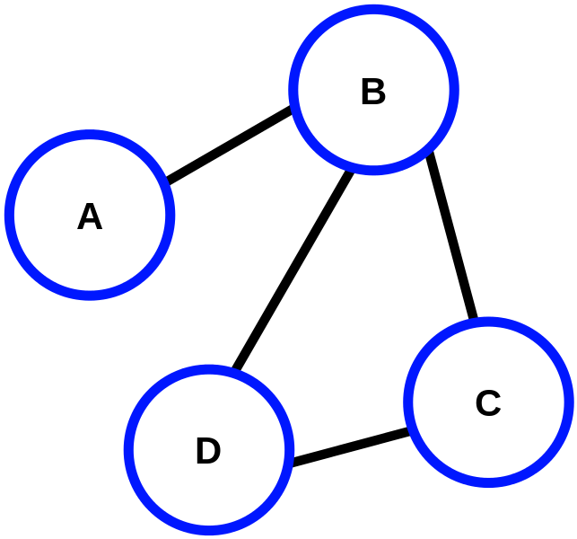
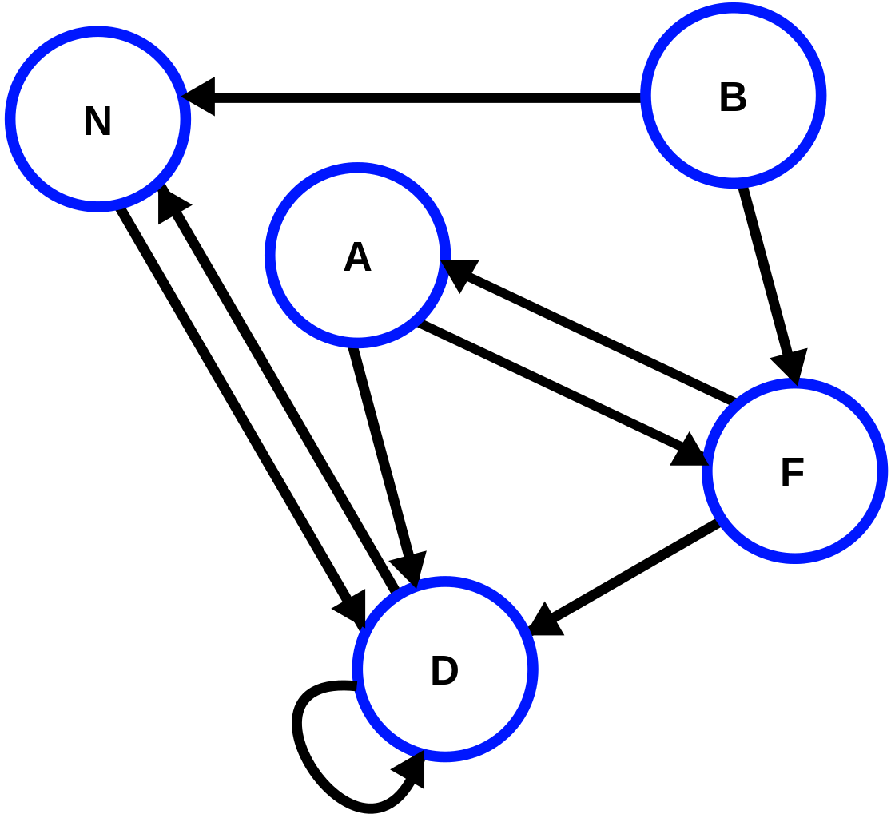
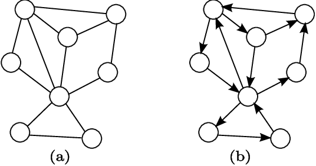
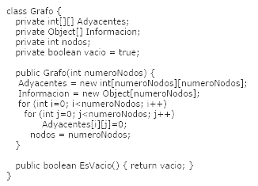

Grafos



Se define formalmente como una estructura finita formada por un nodo al cual están conectados ninguno, uno o más árboles disjuntos (no comparten elementos).
Los grafos son una estructura de datos no lineal parecida a la de los arboles, pero este seria un árbol sin las leyes de acomodo que rigen a un árbol normal. Los grafos están conformados de nodos o también nombrados vértices los cuales son registros con datos y al menos un apuntador a otro nodo, y de aristas, las cuales son las conexiones que existen de un nodo a otro.
Existen dos tipo de grafos, los grafos dirigidos y los grafos no dirigidos.
- Arboles dirigidos: Son grafos en cuyas aristas se muestra la dirección en la que van las conexiones de los nodos, e igual que los no dirigidos, hay grafos dirigidos y ponderados, los cuales aparte de tener unas dirección las aristas también cuentan con un valor definido.
- Arboles no dirigidos: Son grafos que no cuentan con una dirección establecida de en que orden van las conexiones de un nodo a otro en los grafos, a su vez están los no dirigidos pero ponderados, que en estos se agrega un valor a las aristas y esto afecta al momento de conocer cual seria la ruta mas corta de un nodo a otro.
Ejemplo de un grafo no dirigido (a) y un grafo dirigido (b)

Ejemplo pasado a codigo
